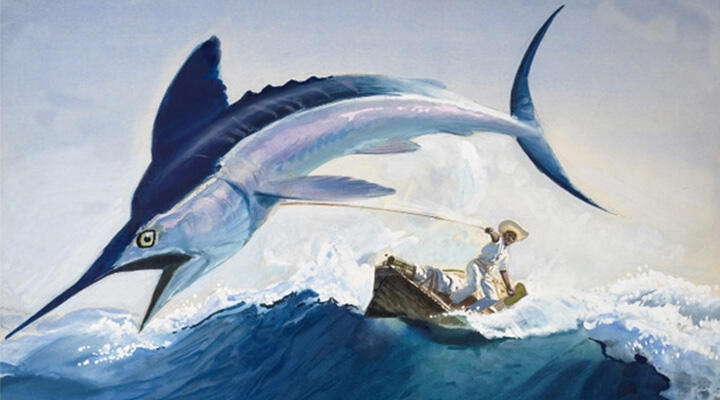
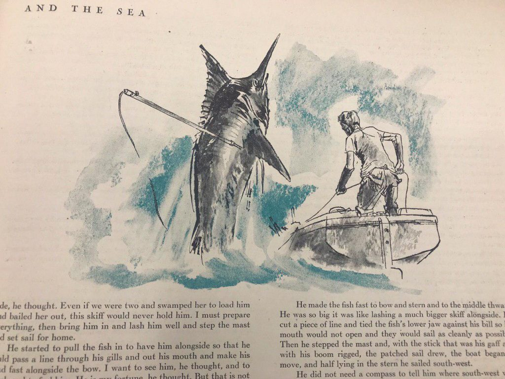
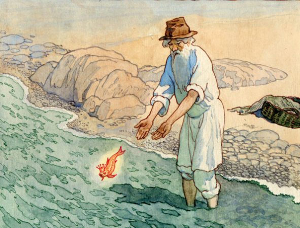

Старий і море. Сенс твору
Повість Ернеста Хемінгуея була написана в 1952 році, і з того часу викликає постійні суперечки з приводу тлумачення основного змісту твору. Складність тлумачення полягає в тому, що в повісті однакова увага приділяється мотивами страждання і самотності людини і перемога героїчного початку в ній.
Адже ці теми надзвичайно важливі в житті кожної людини. Геніальність письменника полягає в тому, що він показує ці теми, як дві сторони однієї медалі, і ключовий сенс повісті полягає в тому, що Хемінгуей дозволяє читачеві самостійно вибрати те, на яку з сторін дивитися. Саме це і можна назвати творчою філософією Хемінгуея – суперечливість і подвійність його творів. А «Старий і море» називають самою яскравою і приголомшливою повістю письменника.
Образи повісті «Старий і море»

Перш за все, варто звернути увагу на головний образ у повісті – на старого Сантьяго, який зазнає постійних невдач протягом всієї розповіді. Парус його човна старий і недієздатний, а сам герой – це знеможений життям старий з веселими очима. Очима людини, яка не здається. У цьому і полягає філософський символізм повісті. Коли читач спостерігає за тим, як старий бореться з рибою, в діях і словах головного героя він бачить фаталізм одвічної боротьби людини.
Сантьяго напружує всі свої сили і незважаючи ні на що продовжує поєдинок, в кінці якого він перемагає. Саме в цьому моменті розкривається одне з основних філософських задумок твору, яка полягає в тому, що «людину можна знищити, але її не можна перемогти».
Сила характеру старого

Поєдинком старого Сантьяго і великої риби Хемінгуей звертає нашу увагу на справжню натуру людської душі і сенс людського життя. Символічна боротьба особистості Сантьяго триває тоді, коли акули нападають на його рибу. Герой не впадає у відчай, не здається, і попри втому і знемогу, продовжує боротися, захищати те, що він добув таким великим трудом. Ні рани на його руках, ні поламаний ніж не заважає йому в цьому. І в момент, коли стає очевидно, що Сантьяго не зміг врятувати рибу, розкривається ключовий символ філософії письменника.
Герой не зберіг рибу, але герой не програв, тому що – він боровся до останнього.
Знесилений і знесилений герой таки повертається в порт, де його чекає хлопчик. Хемінгуей показує нам старого, як переможця і розкриває силу його характеру. Адже образ Сантьяго увібрав у себе риси справжнього героя, людини, яка ніколи не змінює самому собі і своїм принципам. Задумкою письменника було показати філософську сторону принципів людського існування, і він робить це на прикладі єдиного персонажа та його ставлення до життя.
Сенс людського життя в повісті

У цій повісті відсутня трагічна кінцівка, фінал можна назвати повністю відкритим для уяви читачів. У цьому і укладена нищівна сила філософії Хемінгуея, він надає нам можливість самостійно підбити моральний підсумок повісті. Особистість Сантьяго – це символ сили героїчного початку в людині і символ справжньої людської перемоги, яка не залежить від обставин і подій.
Використовуючи цей образ, письменник розкриває сенс людського життя, який можна назвати боротьбою. Головний герой незламний, завдяки силі свого характеру, духу і життєвих позицій, саме ці внутрішні якості допомагають йому перемагати, попри старість, збиток фізичних сил і несприятливі обставини..